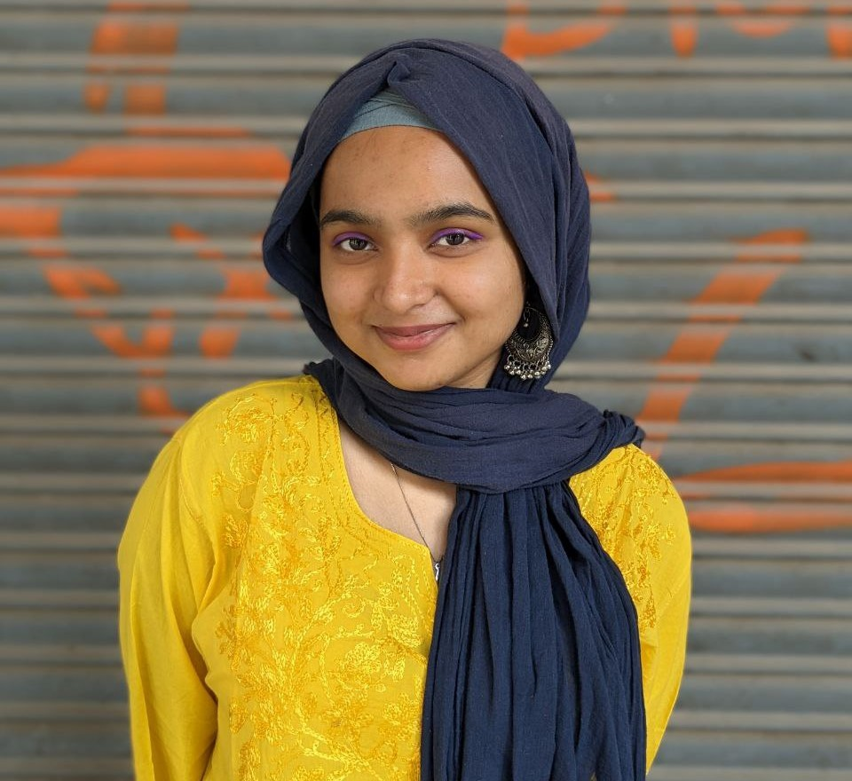

Who am I?
Greetings, and welcome to my portfolio. I am Alika Zaidi, about to graduate with an M.Sc. degree in Analytics from Jamia Millia Islamia, complemented by my undergraduate studies at Delhi University. As I step into the professional sphere, I bring a solid academic background and a dedication to applying my knowledge in a corporate setting. Proficient in tools such as Python, R, SQL, PowerBI, and Excel, with a foundational understanding of Machine Learning, I am eager to embark on my journey as an Analyst. Despite being a newcomer to the professional landscape, I approach opportunities with a blend of enthusiasm and a fresh perspective. Within my portfolio, you will find demonstrations of how I have utilized analytical tools to derive meaningful insights from data. I am actively seeking opportunities to contribute to an organization's success as I navigate the initial stages of my career. I look forward to the prospect of securing my first position as an Analyst and making a valuable contribution to the field of data analysis.
This Portfolio
Explore my portfolio to see my Python, SQL, and Power BI projects. The navigation is user-friendly for easy exploration. Each project offers insights into my skills. For inquiries or collaborations, find my contact details, including LinkedIn and phone number. Looking forward to connecting with you!